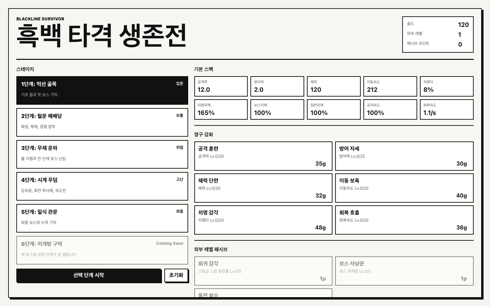
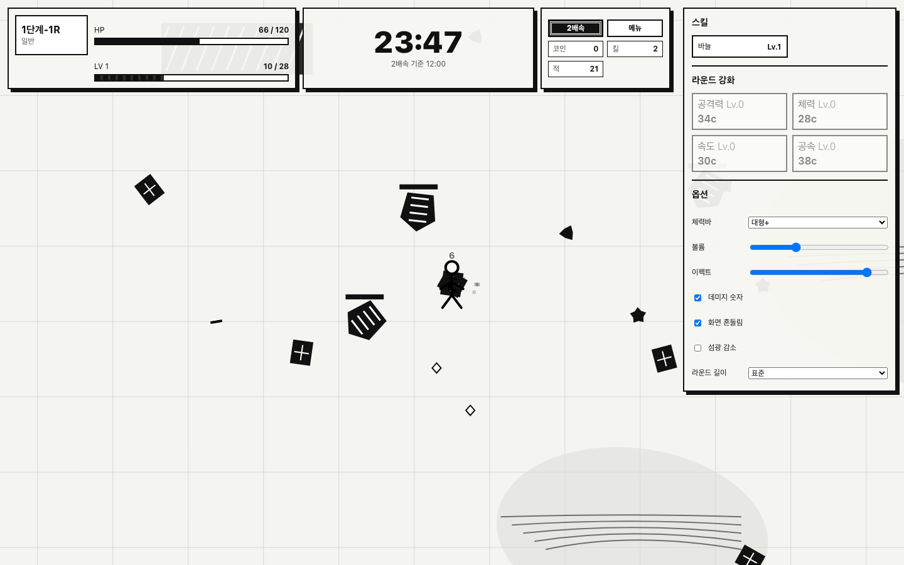

Stage 선택
메뉴의 Chapter와 Stage를 선택한 뒤 시작합니다. 일반 Stage를 순서대로 클리어하면 다음 Stage가 열립니다.
게임 설명서 · 조작 · 개발 도구
움직임에 집중하고, 공격은 자동으로 맡기세요. 5개 Chapter, 50개 Stage를 돌파하거나 시간 제한 없는 무한 경쟁에서 최고 점수에 도전하는 흑백 타격 생존전입니다.
Stage를 고르고, 공격 범위를 유지하며, 레벨업 때 빌드를 선택하면 됩니다. 직접 공격 버튼은 없습니다.
메뉴의 Chapter와 Stage를 선택한 뒤 시작합니다. 일반 Stage를 순서대로 클리어하면 다음 Stage가 열립니다.
WASD, 방향키, 포인터 또는 게임패드로 적과 위험 구역을 피합니다. 공격 스킬은 자동으로 발동합니다.
XP를 모아 레벨업하고 스킬을 선택합니다. 코인은 현재 Run 강화에, 골드는 메뉴의 영구 강화에 사용합니다.

키보드, 마우스·터치, 표준 게임패드 중 편한 입력을 사용합니다. 동시에 입력하면 키보드가 우선합니다.
방향키 ↑ ← ↓ →도 동일하게 동작합니다.
Run 안의 코인·스킬·강화는 종료 시 초기화되고, 골드·외부 레벨·영구 강화·Stage 해금은 로컬 저장됩니다.
현재 HP, Stage 목표 진행도, Run 레벨과 XP를 표시합니다. HP가 0이 되기 전에 목표를 완수하세요.
Stage 제한 시간과 보스 체력을 확인합니다. 보스의 예고선과 위험 구역은 형태가 확정되기 전에 벗어나는 것이 안전합니다.
×1·×2 속도, 런 패널, 일시정지와 현재 코인·킬·적 수를 표시합니다.
현재 스킬 레벨, Run Seed, 공격력·체력·속도·공속·자석 강화를 확인하고 구매할 수 있습니다.

Stage 5 중간보스 수준에서 시작해 시간에 따라 적의 체력·피해·속도·밀도가 계속 상승합니다. 제한 시간과 최종 보스는 없습니다.
모든 영구·Run·스킬 방어 스탯을 갖춘 빌드도 30분 전후에는 보스나 적 무리에 수 초 노출되면 사망할 수 있습니다.
일부 일반 몹은 붉은 외곽선과 조준선을 표시한 뒤 투사체를 발사합니다. 동시 등장 수는 초반 2체, 후반에도 최대 5체로 제한됩니다.
거울 분신을 획득하면 플레이어 옆에 옅은 파란 실루엣이 계속 표시됩니다. 각성하면 양옆에 한 체씩 표시되어 보유 여부를 바로 확인할 수 있습니다.
랭킹의 Seed 버튼으로 같은 전장 순서를 다시 사용할 수 있습니다. 개발자 모드 또는 치트를 사용한 Run은 PRACTICE로 표시되고 TOP 10에 저장되지 않습니다.
개발 도구는 전용 Dev 앱 또는 Vite 개발 서버에서 사용할 수 있습니다. 일반 배포 앱에서는 UI와 치트 처리 자체가 비활성화됩니다.
프로젝트 루트에서 아래 명령을 실행합니다. 서버나 접속 주소 없이 실행되는 별도 앱이 생성됩니다.
npm ci npm run package:mac:developer open "release-developer/mac-arm64/Blackline Survivor Dev.app"
간편 실행: Finder에서 run-game-developer.command를 더블클릭합니다.
npm run build, npm run preview, npm run electron 및 run-game.command는 Production 모드입니다. 개발용은 run-game-developer.command 또는 npm run package:mac:developer를 사용하세요.코드는 대소문자를 구분하지 않으며 앞뒤 공백은 무시됩니다. 입력 후 Enter 또는 “입력” 버튼을 누릅니다.
먼저 개발자 모드를 켭니다. 메뉴에서는 Stage 선택 화면 아래 Cheat Code 입력란을, Run 중에는 런 패널의 개발 탭을 사용합니다.
메뉴: Stage 선택 → 개발자 모드 체크 → Cheat Code
Run: ☰ → 개발 → CODE
| 코드 | 범위 | 효과 | 유지 |
|---|---|---|---|
GOLD999GOLD |
전역 | 보유 골드에 9,999를 추가합니다. | 로컬 저장 |
METAUPLEVEL |
전역 | 현재 외부 레벨의 필요 XP만큼 메타 XP를 추가하고 패시브 포인트 1을 지급합니다. | 로컬 저장 |
DEV |
전역 | 현재 세션의 개발자 모드를 반전합니다. 켜짐이면 끄고, 꺼짐이면 켭니다. | 새로고침 시 해제 |
| 코드 | 범위 | 효과 | 초기화 |
|---|---|---|---|
GOD |
RUN | 무적을 켜거나 끕니다. 입력 즉시 HP를 최대로 회복하고, 켜진 동안 직접 피해와 지속 피해로 HP가 감소하지 않습니다. | 새 Run 시작 |
COIN |
RUN | 현재 Run 코인과 Stage 획득 코인에 각각 999를 추가합니다. | Run 종료 |
MAGNET |
RUN | 현재 Run의 자석 강화 레벨을 5 올리고 수집 범위를 즉시 다시 계산합니다. | Run 종료 |
NUKE |
RUN | 현재 화면·월드에 존재하는 모든 적을 즉시 처치합니다. 목표가 끝나지 않았다면 이후 적은 다시 생성됩니다. | 즉시 효과 |
DRAFT |
RUN | 레벨업 형식의 스킬 선택 카드 3장을 즉시 엽니다. | 선택 후 종료 |
CLEAR |
RUN | 일반 Stage는 목표 처치 수를 충족시키고, 보스 Stage는 현재 주요 보스를 처치해 클리어 흐름을 진행합니다. | 현재 Stage 종료 |
Run 패널의 옵션 탭에서 즉시 변경할 수 있고, 지원되는 환경에서는 로컬 저장됩니다.
체력바를 대형 적만, 전체 또는 끄기로 조정하고 데미지 숫자 표시 여부를 선택합니다.
효과음 볼륨과 파티클 밀도를 조절합니다. 프레임이 불안정하면 이펙트를 낮추세요.
화면 흔들림을 끌 수 있습니다. 섬광 감소는 맞은 적이 반전되어 번쩍이지 않게 하고, 흰 번쩍임과 피격 빛을 절반으로 줄입니다. 모션 감소는 맥동, 회전, 흔들림을 멈춥니다. 둘은 따로 켜고 끄며, 운영체제의 동작 줄이기 설정은 모션 감소로 자동 반영됩니다.
표준은 본편 길이, 쇼케이스는 짧은 시연용 라운드입니다. 난이도 검증이나 빠른 확인에는 쇼케이스를 사용하세요.
개발 도구가 보이지 않거나 입력이 반응하지 않을 때 먼저 실행 모드와 포커스를 확인합니다.
Production 빌드입니다. 앱 이름이 Blackline Survivor Dev인지 확인하세요. 개발용 앱이 없다면 run-game-developer.command를 더블클릭하거나 npm run package:mac:developer를 실행하세요. 일반 npm run electron에는 개발자 UI가 없습니다.
GOD, COIN, MAGNET, NUKE, DRAFT, CLEAR는 활성 Run이 있을 때만 동작합니다. Stage를 시작한 뒤 ☰ → 개발 탭에서 입력하세요.
치트 입력창, 선택 상자, 슬라이더처럼 글자나 값을 입력하는 칸에 포커스가 있으면 이동 입력을 무시합니다. 해당 칸 밖을 한 번 클릭한 뒤 WASD 또는 방향키를 사용하세요. HUD 버튼을 누른 뒤에는 바로 이동할 수 있습니다.
의도된 동작입니다. 개발자 모드에서는 모든 Stage를 바로 선택할 수 있는 대신 정상 캠페인의 Stage 해금 진행도를 갱신하지 않습니다. 체크를 해제하고 기존 해금 Stage부터 정상 플레이하세요.
메뉴의 초기화 버튼을 누른 뒤 확인합니다. 골드, 외부 레벨, 영구 강화, 패시브, Stage 해금 진행도가 모두 기본 상태로 돌아가며 되돌릴 수 없습니다.